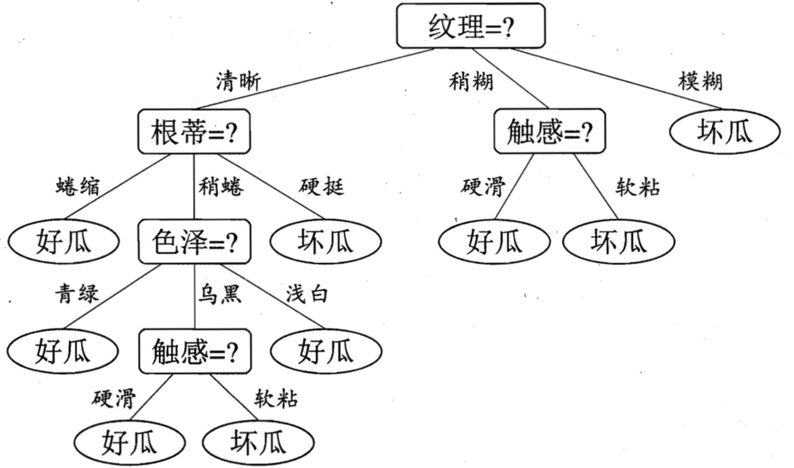

06_决策树
1 概述
决策树（Decision Tree）是一种基于树形结构的算法，根据一系列条件判断逐步划分数据，缩小范围，最终得出预测结果。决策树由 4 部分组成： - 根节点：树的节点，包含所有数据 - 内部节点：表示特征上的判断条件 - 分支：根据判断条件分出的路径 - 叶子节点：最终分类或回归的结果
决策树适用于需要规则化、可解释性和快速决策的场景，尤其在数据特征明确、样本量适中的情况下表现良好。在复杂任务中，它常作为基模型，与集成学习结合（如随机森林、梯度提升树）以提升性能。 
2 决策树工作流程
训练决策树模型有三个核心的步骤：特征选择、决策树构建和决策树剪枝。
递归选择最优特征，并根据该特征对训练数据进行划分，使得对各个子数据集有一个最好的分类。 1. 首先构建根结点，将所有训练数据都放在根结点。 2. 选择一个最优特征，按照这一特征将训练数据集划分成子集，使得各个子集有一个在当前条件下最好的分类。 3. 如果这些子集已经能够被基本正确分类，那么构建叶结点，并将这些子集分到所对应的叶结点中去； 如果还有子集不能被基本正确分类，那么就对这些子集选择新的最优特征，继续对其进行划分并构建相应的结点。 4. 如此递归直至所有训练数据子集被基本正确分类，或者没有合适的特征为止。
最后每个子集都被分到叶结点有了明确的类，这就生成了一棵决策树。这样生成的决策树对训练数据有很好的分类能力，但可能发生过拟合现象。因此需要对已生成的树进行剪枝，将树变得更简单，从而使它具有更好的泛化能力。
2.1 特征选择
特征选择在于选取对训练数据具有分类能力的特征，这样可以提高决策树学习的效率。 如果一个特征能够使得分类后的分支结点尽可能属于同一类别，即该结点有着较高的纯度（purity），那么该特征对数据集而言就具备较强的分类能力。
通常选择的准则有信息增益、信息增益率和基尼指数
2.1.1 信息增益与 ID3
信息熵（entropy）是度量样本集合“纯度”的一个指标，当前样本集合 D 中共有 k 种类别，第 i 类样本样本的比例（也就是出现概率）为 pk，则 D 的信息熵定义为： $$Ent(D) = -\sum_{i = 1}^{k} p_i\,log_2\,p_i$$ 不难发现，信息熵越小，D 的纯度越大。可以得出，Ent(D)的最小值为 0，最大值为 log2k。
直接以信息熵为基础，计算当前划分对信息熵所造成的变化，也就是信息增益（information gain），衡量的是当前划分对信息的不确定性减少的贡献程度。公式为 划分前的信息熵 - 划分后的信息熵。 $$\mathrm{Gain}(D,A)=\mathrm{Ent}(D)-\sum_{v=1}^{V}\frac{|D_v|}{|D|}\mathrm{Ent}(D_v)$$ 可以看出， 划分后的信息熵表达的是在给定特征 A 的条件下，数据集 D 的不确定性，称为条件熵： $$Ent(D|A)=\sum_{v=1}^{V}\frac{|D_v|}{|D|}\mathrm{Ent}(D_v)$$ - 特征 A 的取值：a1, a2, ...av，共有 V 个 - Dv：D 在特征 A 上取值为 av 的样本子集 - $\frac{|D_v|}{D}$：取值为 av 的样本比例，第 v 个分支的权重，样本越多越重要 - Ent(Dv)：子集 Dv 的信息熵
ID3 算法就是基于信息增益进行特征选择的。
2.1.2 信息增益率与 C4.5
信息增益作为划分准则时，倾向于筛选性强的特征，极端来看每个特征值只对应一个结果，那么结果就够纯，所以信息增益会倾向于选择取值较多的特征。
信息增益率（information gain ratio） 可以对这一问题进行校正： $$\mathrm{Gain_ratio}(D,A)=\frac{\mathrm{Gain}(D,A)}{\mathrm{IV}(A)}$$ 其中 IV(A) 为： $${IV}(A)=-\sum_{v=1}^{V}\frac{|D_{v}|}{|D|}\log_{2}\frac{|D_{v}|}{|D|}$$ IV(A) 表述的基本思想是特征 A 的取值信息熵，取值数目越多，则 IV(A) 取值越大。
信息增益率希望选择的是： 1. 信息增益尽可能大 2. 特征取值尽可能少
C4.5 算法就是基于信息增益比进行特征选择的，但不是仅仅参考信息增益比，而是采用了启发式方法，会在 避免取值较多的特征 和 避免信息增益过小 之间找到平衡。
2.1.3 基尼指数与 CART
样本 D 有 k 种类别，样本属于第 k 种类别的概率为 pk，那么两次抽到的是同一类别的概率为 pk2，一共 k 种类别求和得到抽到任一同样类别的概率，用 1 减去这个概率，反映的是从样本 D 中任取两个样本，其类别标签不一致的概率。 $$Gini(D) = 1 - \sum_{k=1}^{n}{p_{k}}^{2}$$ 该值称为基尼指数（Gini index），基尼指数越大样本集合的不确定性也越大，这与信息熵相似。
属性 A 的基尼指数为： $$Gini\_index(D, A) = \sum_{v=1}^{V}\frac{\lvert D_{v} \rvert}{\lvert D \rvert}Gini(D_{v})$$ 和特征熵类似，根据特征 A 的取值，将数据集分为 V 个子集， 分别计算每个子集的基尼指数，按照权重（占比）进行求和。
CART 算法就是基于基尼指数进行特征选择的，CART 既可以生成分类树，也可以生成回归树。
在回归问题中面对的特征是连续值，可以通过遍历特征所有可能的取值，找到切分点 $\small{x}$ 让切分后的子集在信息增益比或基尼指数方面达到最优，在数据分裂时以 $\small{x}$ 为分界点将数据划分为 $\small{D_{1}}$ 和 $\small{D_{2}}$ 两个子集，其中 $\small{D_{1}}$ 包含特征值小于等于 $\small{x}$ 的样本， $\small{D_{2}}$ 包含特征值大于 $\small{x}$ 的样本。
2.2 数据分裂
通过上述准则选定特征后就要进行数据分裂，根据选定特征将数据集分成两个或多个子集，每个子集对应于特征的不同取值。递归对每个子集重复特征选择和数据分裂的动作，直到满足停止条件。
常见的停止条件： 1. 树达到预设的深度 2. 当前结点的样本数量少于预设的阈值 3. 结点上所有样本属于同一个类别 4. 信息增益或 Gini 指数的变动低于某个阈值
2.3 决策树剪枝
剪枝可以减少树结构的复杂性，避免过拟合的风险，提升泛化能力。 - 预剪枝（pre-pruning）：在构建决策树的过程中设置一些限制条件（上一节中罗列了常见停止条件）提前停止树的生长，避免生成过于复杂的树，但是可能存在欠拟合的风险，因为过早停止分裂可能会遗漏潜在的重要决策规则。 - 后剪枝（post-pruning）：后剪枝是在决策树构建完成后，通过评估和移除一些不必要的分支来简化树结构。在减少过拟合风险的同时，还能较好的保留对数据的拟合能力，但是计算量较大，而且如果没有合适的验证集，剪枝效果就会受到影响。
3 API 使用
sklearn 中的基于 CART 算法分别实现了
DecisionTreeClassifier 和
DecisionTreeRegressor 来分别解决分类和回归问题。
1
2
3
4from sklearn.tree import DecisionTreeClassifier, DecisionTreeRegressor
model1 = DecisionTreeClassifier()
model2 = DecisionTreeRegressor()
criterion：特征选择（数据分裂质量评估）的标准，可以选择'gini'或'entropy'，前者代表基尼指数，也是默认值，后者代表信息增益。max_depth：树的最大深度，默认值为None，如果不设置该参数，会存在过拟合风险。min_samples_split：一个内部结点再次分裂所需的最小样本数，默认值为2。这个参数可以设置为整数表示最小样本数，也可以设置为浮点数，表示占总样本数的比例。min_samples_leaf：叶结点所需的最小样本数，默认值为1。将该参数设置为较大的值可以平滑模型，降低过拟合风险。这个参数也可以设置为整数或浮点数，道理同上。max_features：用于最佳分裂的特征数，默认值为None。这个参数可以设置为整数，表示选择固定数量的特征；可以设置为浮点数，表示选择特征的比例；可以设置为字符串，'auto'和'sqrt'表示将总的特征数量求平方根，用平方根的值作为选择特征的数量，'log2'表示将总的特征数量求对数，用对数值作为选择特征的数量。class_weight：指定类别的权重，用于处理类别不平衡问题，默认值为None。可以用字典的方式手动设置每个类别的权重，也可以使用'balanced'让模型自动调整。splitter：选择分裂结点的策略，默认值为'best'，表示最佳分裂，还有一个取值是'random'，表示随机分裂。max_leaf_nodes：限制叶结点的最大数量，可以防止树结构过于复杂。min_impurity_decrease：结点分裂所需的最小不纯度降低值，任何结点只有在不纯度减少超过此值时才会进行分裂。ccp_alpha：成本复杂度剪枝中的$\small{\alpha}$参数值。这个参数用于控制后剪枝中成本复杂度计算公式中$\small{\alpha}$的值。较小的$\small{\alpha}$值允许更复杂的树，而较大的$\small{\alpha}$值倾向于选择更简单的树。通过调整$\small{\alpha}$，可以找到一个最佳的复杂度和误差之间的平衡点。
通过以下代码可以可视化决策树： 1
2
3
4
5
6
7
8from sklearn.tree import plot_tree
plot_tree(
decision_tree=model, # 决策树模型
feature_names=iris.feature_names, # 特征的名称
class_names=iris.target_names, # 标签的名称
filled=True # 用颜色填充
)